201 — Service mesh, mTLS y gestión de tráfico este-oeste
Parte: 16 — Redes cloud avanzadas, conectividad híbrida y edge
Nivel: avanzado · Horas estimadas: 4
Laboratorio: network · Estado: EXECUTABLE_CORE
🎯 Propósito
Decidir si hace falta una malla de servicios, y si hace falta, qué parte de ella. La clase separa las cinco capacidades que una malla ofrece y comprueba cuáles están ya resueltas en otra capa —que fue el hallazgo de la clase 152 y el de la hipótesis de la parte 16—, explica el TLS mutuo como identidad de carga y no como cifrado, y advierte de lo que una malla cuesta de verdad: latencia por salto, recursos por réplica y un plano de control más que operar.
📚 Resultados de aprendizaje
Al finalizar podrás:
- Enumerar las cinco capacidades de una malla y dónde más se resuelven.
- Decidir si una malla compensa, con las capacidades que faltan.
- Implantar identidad de carga con TLS mutuo y autorización por servicio.
- Configurar reintentos, plazos y cortes sin empeorar la saturación.
- Medir el coste real: latencia, recursos y operación.
🧩 Conceptos centrales
| Concepto | Comprensión verificable |
|---|---|
malla de servicios |
Capa que intercepta el tráfico entre servicios para aplicar identidad, política, resiliencia y telemetría. |
acompañante |
Proceso o biblioteca que intercepta el tráfico de un servicio. Añade latencia y consume recursos por réplica. |
TLS mutuo |
Ambos extremos presentan certificado. Da identidad criptográfica a cada carga, sin credenciales guardadas. |
autorización este-oeste |
Regla que dice qué servicio puede llamar a qué servicio y con qué método. |
plano de control |
Componente que distribuye configuración a los acompañantes. Su fallo tiene consecuencias propias. |
modo sin acompañante |
Variante que evita un proceso por réplica usando el nodo o el propio protocolo. Reduce coste y limita capacidades. |
🧠 Modelo mental
La red cloud es un sistema distribuido de rutas, identidades y políticas; cada salto añade latencia, costo y una frontera de fallo.
Aplicado a esta clase, separa siempre cuatro planos: intención (qué necesita el usuario), configuración (qué declaramos), estado observado (qué existe de verdad) y evidencia (cómo sabemos que cumple). Confundirlos produce diseños que se ven correctos en un diagrama pero fallan al operar.
🗺️ Flujo de razonamiento

📖 Desarrollo
1. Las cinco capacidades, y dónde más se resuelven
Una malla se vende como un producto y en realidad son cinco cosas distintas. La pregunta útil no es «¿queremos malla?» sino «¿cuáles de las cinco nos faltan?».
1 IDENTIDAD Y CIFRADO ENTRE SERVICIOS (mTLS)
dónde más se resuelve
identidad de carga del proveedor + TLS en el balanceador
clases 159, 196
pero: eso cifra hasta el balanceador, no entre servicios
→ a escala, es la capacidad que MENOS alternativas tiene
2 AUTORIZACIÓN SERVICIO A SERVICIO
dónde más se resuelve
grupos de seguridad por servicio clase 135
comprobación en la aplicación
→ los grupos de seguridad autorizan por red, no por
identidad; y con escalado dinámico se quedan cortos
3 RESILIENCIA: reintentos, plazos, cortes, mamparos
dónde más se resuelve
bibliotecas del lenguaje clase 153
el balanceador de capa 7 clase 196
→ si hay pocos lenguajes, la biblioteca basta
→ si hay siete, la malla evita implementarlo siete veces
4 GESTIÓN DE TRÁFICO: pesos, espejo, inyección de fallos
dónde más se resuelve
el balanceador de capa 7 y la canalización clase 102
→ para el tráfico de entrada, el balanceador basta
→ para el tráfico interno entre servicios, no
5 TELEMETRÍA UNIFORME
dónde más se resuelve
instrumentación de la aplicación clase 121
→ la malla da métricas de red por par de servicios sin
tocar código, que es real y útil
→ pero NO da trazas de dentro de la aplicación
Y la conclusión del análisis, que coincide con lo que este programa ya encontró:
de las cinco, en un sistema con balanceador de capa 7 bien
configurado y pocos lenguajes
1 falta ← esta sí
2 falta a escala ← esta también
3 resuelta
4 resuelta para lo que importa
5 parcialmente resuelta
→ la malla se justifica por 1 y 2, o no se justifica
→ y si se adopta, conviene adoptar SOLO eso al principio
Y la advertencia que da esta clase:
adoptar una malla por las cinco capacidades cuando tres ya
están resueltas produce dos implementaciones de lo mismo
→ dos sitios donde configurar reintentos
→ y reintentos anidados, que multiplican la carga ← ver abajo
2. Identidad de carga y autorización
TLS mutuo se explica mal como «cifrado entre servicios». Cifrar es lo de menos: lo importante es que cada carga tiene una identidad criptográfica que no se puede robar y copiar.
CÓMO FUNCIONA
cada carga recibe un certificado de corta vida (horas)
emitido por una autoridad interna, en función de su
identidad de despliegue
al conectar, ambos extremos presentan y verifican
QUÉ DA
identidad sin credenciales guardadas clase 159
rotación automática y corta
autorización basada en QUIÉN llama, no en desde qué IP
y cifrado, de propina
Y por qué la identidad por red no basta a escala:
UN GRUPO DE SEGURIDAD DICE
«desde esta subred se puede llegar al puerto 8080»
CON ESCALADO DINÁMICO Y CONTENEDORES
en esa subred hay 40 servicios distintos
→ autorizar por red autoriza a los 40
→ y la dirección cambia cada pocos minutos
CON IDENTIDAD DE CARGA
«el servicio pedidos puede llamar a POST /cobrar del
servicio pagos»
→ y nada más
La autorización este-oeste, que es lo que convierte la identidad en control:
regla por origen, destino, método y ruta
origen pedidos
destino pagos
permite POST /cobrar, POST /reembolsar
deniega el resto
y con denegación por defecto
→ el alcance desde un servicio comprometido pasa de
«todo lo de la red» a «tres llamadas» clase 189
Y el orden de implantación que no rompe nada:
1 mTLS en modo PERMISIVO
se acepta tráfico cifrado y sin cifrar
→ nada se rompe; se empieza a ver quién habla con quién
2 observar el grafo real de llamadas
→ y comprobarlo contra el diagrama ley 24
3 mTLS ESTRICTO, servicio por servicio
4 autorización en modo REGISTRO
se registra lo que se denegaría, sin denegar
5 autorización APLICADA, con denegación por defecto
Y el paso 2 suele ser el que más valor da:
el grafo real de llamadas casi nunca coincide con el
diagrama
→ aparecen llamadas que nadie sabía clase 182
→ y servicios que no habla con nadie: candidatos a retirar
ley 23
3. Resiliencia sin empeorar la saturación
Las funciones de resiliencia de una malla son fáciles de activar y fáciles de configurar mal.
EL PELIGRO PRINCIPAL: REINTENTOS ANIDADOS
el cliente reintenta 3 veces
la malla reintenta 3 veces
el balanceador reintenta 2 veces
→ una petición se convierte en 18 al destino
→ y en saturación, esto es lo que impide recuperarse
clase 186
REGLA
los reintentos se hacen en UNA sola capa
→ decidir cuál, escribirlo, y desactivarlo en las demás
Y las reglas de configuración que este programa ya ha establecido y que aquí se aplican:
REINTENTOS
solo peticiones idempotentes clase 117
máximo 1 o 2, con retroceso y dispersión
con presupuesto: «como mucho el 10 % del tráfico puede
ser reintento» ← esto lo da la malla y es útil
PLAZOS
propagados: el plazo restante viaja con la petición
y cada salto no empieza si no le queda tiempo clase 186
CORTES (interruptor)
abre cuando la tasa de error o la latencia superan el
umbral
→ deja de enviar y falla rápido
→ y hay que decidir qué hace el llamante cuando abre:
valor por defecto, cacheado o error clase 185
EXPULSIÓN DE ATÍPICOS
retira réplicas concretas que fallan clase 196
→ cubre el fallo gris
Y una capacidad que solo la malla da con facilidad:
INYECCIÓN DE FALLOS
«el 5 % de las llamadas a catálogo devuelven error»
«el 10 % tardan 3 segundos»
→ permite ejecutar las pruebas negativas de dependencia
sin tocar el código ley 22
→ es la forma más barata de comprobar si una dependencia
declarada blanda lo es clase 185
Y el espejo de tráfico, útil para migraciones:
ENVIAR UNA COPIA del tráfico real al servicio nuevo, sin
usar su respuesta
→ valida con carga real antes de desviar nada clase 184
→ cuidado: si el servicio nuevo escribe, el espejo duplica
escrituras
4. Lo que cuesta de verdad
El coste de una malla se subestima porque se reparte entre muchas partidas pequeñas.
LATENCIA
acompañante en el origen +0,3-1 ms
acompañante en el destino +0,3-1 ms
→ una llamada añade 0,6-2 ms
→ una operación que cruza 4 servicios: +2,4-8 ms
→ y con TLS mutuo, algo más en el establecimiento
RECURSOS
un acompañante por réplica: típicamente 50-150 MB de
memoria y una fracción de CPU
→ 400 réplicas × 100 MB = 40 GB solo de acompañantes
→ y en cargas con muchas réplicas pequeñas, el
acompañante puede consumir más que el propio servicio
OPERACIÓN
un plano de control que actualizar y vigilar
certificados internos que rotar
una capa más donde diagnosticar
y versiones que hay que ir subiendo
DIAGNÓSTICO
«¿el error 503 lo devuelve mi servicio, el acompañante
del destino o el mío?»
→ hay que aprender a leer los códigos propios de la malla
Y los modos que reducen coste, con lo que se pierde:
SIN ACOMPAÑANTE, EN EL NODO
un proxy por nodo en vez de por réplica
+ mucho menos consumo
− aislamiento menor entre servicios del mismo nodo
SIN PROXY, EN EL PROTOCOLO
el cifrado y la identidad se hacen en la capa de red
+ latencia casi nula
− no da capacidades de capa 7 (reintentos por ruta,
autorización por método)
BIBLIOTECA EN LA APLICACIÓN
+ sin salto extra
− una por lenguaje; actualizarla exige redesplegar todo
Y la decisión práctica:
si lo que hace falta son las capacidades 1 y 2, un modo
ligero (nodo o protocolo) suele bastar y cuesta mucho menos
→ adoptar el modo completo solo si se van a usar las
capacidades de capa 7
El plano de control como punto único, que hay que entender antes:
si el plano de control cae
los acompañantes siguen con su última configuración
→ el tráfico NO se para
PERO
no se propagan cambios
las réplicas NUEVAS pueden no obtener configuración ni
certificado
y si los certificados caducan antes de que vuelva, el
tráfico SÍ se para ley 13
→ vigilar el plano de control y la antigüedad de la
configuración distribuida es obligatorio
Y la lista de comprobación de la clase:
☐ está escrito cuáles de las cinco capacidades faltan
☐ las que ya están resueltas no se duplican
☐ los reintentos se hacen en UNA sola capa
☐ hay presupuesto de reintentos
☐ los plazos se propagan
☐ mTLS se implantó en permisivo antes que en estricto
☐ el grafo real de llamadas se comparó con el diagrama
☐ la autorización pasó por modo registro antes de aplicar
☐ hay denegación por defecto entre servicios
☐ está medida la latencia añadida por salto
☐ está medido el consumo de los acompañantes
☐ se vigila el plano de control y la antigüedad de la
configuración
☐ se usa inyección de fallos para las pruebas negativas
Y el cierre que enlaza con la clase siguiente: con identidad, política y telemetría entre servicios, sigue habiendo incidentes cuya causa no aparece en ninguna métrica. Ver el tráfico de verdad —flujos, captura y observación del núcleo— es la materia de la clase 202.
🔬 Ejemplo trabajado
CloudShop evalúa adoptar una malla de servicios. Lo que sigue es el análisis capacidad por capacidad, la decisión de adoptar solo dos, y lo que apareció al ver el grafo real de llamadas.
El análisis, hecho con el método de la clase 152.
1 IDENTIDAD Y mTLS
estado actual
el tráfico entre servicios va sin cifrar dentro de la
red
la autorización es por grupo de seguridad: 40 servicios
comparten subred
3 servicios usan una clave estática compartida para
autenticarse entre sí, de 2022
veredicto FALTA, y no hay alternativa razonable a escala
2 AUTORIZACIÓN SERVICIO A SERVICIO
estado actual
ninguna: cualquier servicio puede llamar a cualquier
otro
el modelo de amenazas dio alcance de 11 servicios desde
uno comprometido clase 189
veredicto FALTA
3 RESILIENCIA
estado actual
biblioteca común en los 2 lenguajes principales, con
plazos, reintentos y cortes
el balanceador de capa 7 ya hace reintentos de entrada
veredicto RESUELTA — y duplicarla es peligroso
4 GESTIÓN DE TRÁFICO
estado actual
despliegue escalonado por el balanceador y por la
canalización clase 102
lo que NO hay: espejo de tráfico e inyección de fallos
veredicto RESUELTA en un 80 %; falta lo de pruebas
5 TELEMETRÍA
estado actual
trazas instrumentadas, con contexto propagado
clase 121
lo que falta: métricas por PAR de servicios sin tocar
código
veredicto RESUELTA en su mayor parte
La decisión:
se adopta una malla, EN MODO LIGERO, y solo para 1 y 2
identidad y mTLS sí
autorización servicio a servicio sí
reintentos, plazos y cortes de la malla DESACTIVADOS
→ se quedan en la biblioteca, que ya funciona
gestión de tráfico solo inyección
de fallos, en
entornos de
prueba
telemetría se acepta la que
venga, sin
sustituir la
existente
modo proxy por nodo, no acompañante por réplica
motivo 412 réplicas × 100 MB = 41 GB de memoria solo en
acompañantes; con proxy por nodo son 38 nodos × 250 MB
= 9,5 GB
coste ahorro estimado 2.100 €/mes frente al modo completo
lo que se pierde aislamiento entre servicios del mismo
nodo → aceptado, y registrado clase 190
Fase 1: mTLS permisivo y el grafo real.
se activó en modo permisivo durante 5 semanas
nada se rompió
y se obtuvo el grafo de llamadas observado
servicios declarados en el diagrama 24
servicios que emitieron o recibieron tráfico 29
los 5 no declarados
· un servicio de exportación creado en 2022, sin dueño
· dos réplicas de un servicio que se creía retirado y
seguía recibiendo el 0,4 % del tráfico
· un trabajo programado que llamaba a la API interna
· un panel interno de un equipo de negocio
llamadas declaradas en el diagrama 61
llamadas observadas 96
las 35 no declaradas, clasificadas
18 llamadas legítimas nunca documentadas
9 de servicios de prueba a servicios de producción
← hallazgo grave
5 llamadas circulares que nadie sabía que existían
3 de un servicio a otro que hacía de intermediario
sin razón
servicios que NO hablaron con nadie en 5 semanas 3
→ candidatos a retirada ley 23
Y la línea que resume la fase:
el diagrama tenía 24 servicios y 61 llamadas
la realidad tenía 29 y 96
→ y las 9 llamadas de prueba a producción llevaban meses
ley 24, clase 199
Fase 2: autorización, en modo registro y luego aplicada.
modo registro, 3 semanas
llamadas que se habrían denegado con la política escrita
a partir del grafo observado 340/día
de ellas, legítimas y no previstas 6
→ política corregida
de ellas, de entornos de prueba a producción 310/día
→ cortadas a propósito
de ellas, del servicio sin dueño 24/día
→ se identificó al equipo, se declaró y se documentó
aplicación, servicio por servicio, 6 semanas
denegación por defecto
política por origen, destino, método y ruta
Y el efecto medido en el modelo de amenazas:
alcance desde un servicio comprometido
antes 11 servicios, cualquier método
después 2 servicios, 3 métodos concretos
credenciales estáticas compartidas entre servicios
antes 3
después 0
El coste real, medido:
latencia añadida por salto (proxy por nodo)
p50 +0,4 ms
p99 +1,1 ms
el flujo de compra cruza 3 saltos internos
p99 del flujo +3,4 ms
sobre un objetivo de 500 ms aceptable
recursos
memoria total de proxies 9,5 GB
CPU ~4 % del clúster
operación
actualizaciones del plano de control 1/trimestre
incidentes atribuidos a la malla en 12 meses 2
· una versión del proxy con una regresión de plazos
· certificados internos que no rotaron en 3 nodos
→ detectado por la alerta de antigüedad ley 13
El uso que resultó más valioso y no estaba en la justificación:
INYECCIÓN DE FALLOS en preproducción
se ejecutaron las pruebas negativas de dependencia sin
tocar código ley 22
resultados de la primera tanda
catálogo declarado blando → el flujo se caía ✗
recomendaciones blando → correcto ✓
precios blando → correcto ✓
envíos declarado blando → el listado se caía ✗
identidad → correcto (validación local) ✓
→ 2 de 5 dependencias declaradas blandas eran duras
→ el cálculo del techo de disponibilidad estaba mal
clase 185
→ corregidas con plazo y alternativa; techo recalculado
Y la observación sobre esto:
la capacidad que más problemas reales destapó no fue
ninguna de las dos por las que se adoptó la malla
→ fue poder romper cosas a propósito sin tocar código
El resultado, a los doce meses:
```text antes después servicios con identidad criptográfica 0 29 credenciales estáticas entre servicios 3 0 alcance desde un servicio comprometido 11 2 llamadas de prueba a producción 310/día 0 servicios no declarados 5 0 servicios retirados por no usarse — 3 dependencias blandas que eran duras 2 0 latencia añadida en el flujo de compra — +3,4 ms coste de la malla — 1.900 €/mes
**La lección que esta clase deja**: de las cinco capacidades, **tres ya estaban resueltas** y activarlas habría producido reintentos anidados; la malla se adoptó por dos y en el modo más barato que las daba. El hallazgo mayor de la implantación no fue de seguridad: fue que **el grafo real tenía 96 llamadas donde el diagrama declaraba 61**, incluidas nueve de entornos de prueba a producción. Y lo que más problemas destapó a lo largo del año fue **poder inyectar fallos sin tocar código**, que reveló que dos dependencias declaradas blandas no lo eran.
## 🧪 Laboratorio guiado
Ejecuta desde la raíz:
```bash
python classes/part-16-advanced-cloud-networking-edge/201-service-mesh-mtls-y-gestion-de-trafico-este-oeste/lab.py
El laboratorio selecciona el motor de práctica network y produce
lab_result.json. El escenario, sus comprobaciones y el artefacto esperado corresponden a
esta clase; no requiere credenciales y deja explícito qué debe revalidarse en un sandbox real.
- Lee
exercise.stepsy formula una predicción antes de ejecutar. - Ejecuta la práctica y verifica todos los elementos de
checks. - Provoca el caso de
negative_testy explica la señal observada. - Materializa
service-meshenevidence/usando la plantilla indicada. - Para proveedor real, sigue
sandbox.requires, registra costo y ejecutadestroy.
Evidencia esperada
El artefacto principal es una topología con rutas, puertos y controles. Además, la entrega debe incluir el comando ejecutado, la salida estructurada y una conclusión que no exceda lo observado.
🏆 Reto verificable
Construye service-mesh para el caso CloudShop. Incluye una alternativa descartada,
un supuesto que pueda falsarse, una prueba de fallo y una decisión de rollback.
✅ Criterio de aceptación
- [ ]
lab.pytermina con código 0 y genera JSON válido. - [ ] La entrega conecta al menos tres requisitos con mecanismos verificables.
- [ ] Existe una prueba positiva y una prueba negativa con evidencia.
- [ ] Seguridad, costo y operación aparecen como decisiones, no como anexos.
- [ ] Se declara una limitación y una condición que obligaría a revisar el diseño.
- [ ] Otra persona puede repetir el recorrido sin conocimiento tácito.
⚠️ Errores frecuentes
| Síntoma | Causa probable | Corrección |
|---|---|---|
| Una petición fallida genera decenas de intentos contra el destino | Reintentos anidados en cliente, malla y balanceador | Reintenta en una sola capa, escríbelo, desactiva las demás y usa presupuesto de reintentos. |
| La malla consume más recursos que los propios servicios | Un acompañante por réplica en cargas con muchas réplicas pequeñas | Evalúa el modo por nodo o en la capa de protocolo si solo necesitas identidad y autorización. |
| Activar la autorización corta tráfico legítimo | La política se escribió sobre el diagrama y no sobre el grafo real | Pasa por modo permisivo y modo registro, construye la política con el tráfico observado y aplícala servicio por servicio. |
| Se adopta una malla y no mejora nada medible | Las capacidades que faltaban ya estaban resueltas en otra capa | Analiza las cinco por separado, adopta solo las que faltan y registra la decisión con sus premisas. |
| Las réplicas nuevas no arrancan correctamente | El plano de control está caído y no entrega configuración ni certificados | Vigila el plano de control y la antigüedad de la configuración distribuida, y alerta sobre certificados internos sin rotar. |
| Nadie sabe qué componente devuelve un error | La malla añade una capa con sus propios códigos | Aprende y documenta los códigos propios de la malla, y correlaciona por identificador de traza en las tres capas. |
🛡️ Seguridad, ética y costo
Trabaja con cuentas propias o sandboxes autorizados. No publiques secretos, identificadores reales ni datos personales. Antes de crear recursos pagos define presupuesto, etiquetas y comando de destrucción; después verifica que no queden recursos huérfanos. Los ejemplos locales enseñan contratos, pero no certifican cumplimiento ni disponibilidad de producción.
❓ Preguntas de comprobación
- ¿Cuáles son las cinco capacidades de una malla y cuáles suelen estar ya resueltas?
- ¿Por qué la autorización por grupo de seguridad no basta a escala?
- ¿Qué peligro tiene activar los reintentos de la malla sin desactivar los demás?
- ¿Qué ocurre si cae el plano de control y qué lo convierte en un corte real?
- ¿Qué capacidad permite ejecutar pruebas negativas de dependencia sin tocar código?
🔗 Referencias
- Istio (2025). Security: mutual TLS and authorization policies. https://istio.io/latest/docs/concepts/security/
- Linkerd (2025). Architecture and performance. https://linkerd.io/2/reference/architecture/
- SPIFFE (2025). Workload identity specification. https://spiffe.io/docs/latest/spiffe-about/overview/
- Cilium (2025). Service mesh without sidecars. https://cilium.io/use-cases/service-mesh/
- Google (2016). SRE Book: addressing cascading failures — reintentos y presupuestos. https://sre.google/sre-book/addressing-cascading-failures/
- Documentación oficial vigente del servicio implementado; registra URL y fecha de consulta.
📥 Descargar: Parte 16 en PDF · Manual integral